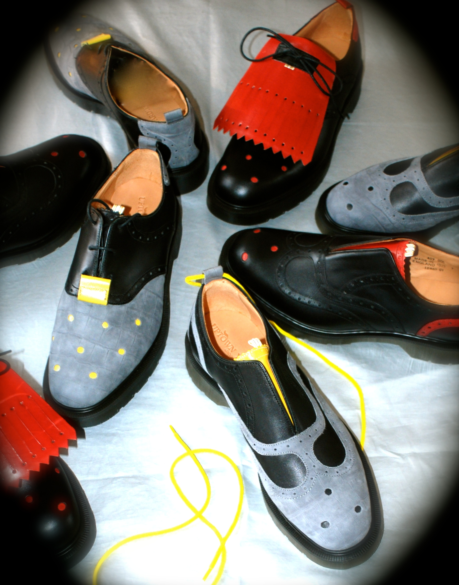
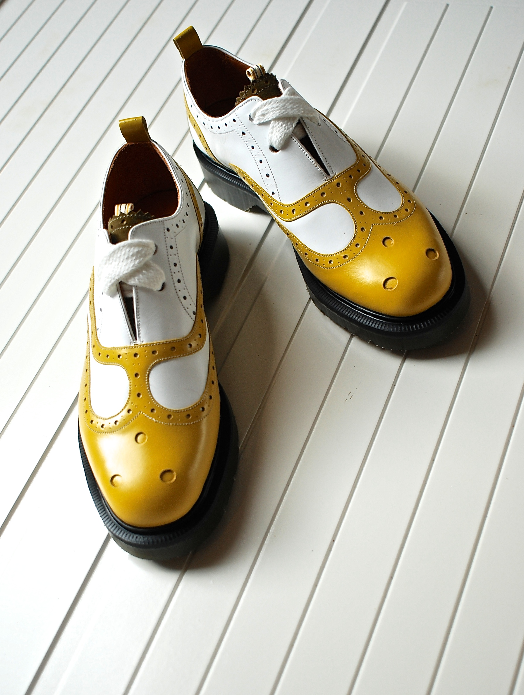

Q&A: UPTOWN YARDIE
When you wear a pair of Yardies you are donning a lifestyle as well. The London based shoe brand, Uptown Yardie, was inspired by the Bob Marley quote, “me ah bring downtown uptown,” meaning to “bring the ghetto, uptown.” Originally an uptown yardie was described as someone who is from the more affluent parts of Jamaica. Designer of the brand, Rohan Clarke wanted take that idea and positively spin it, thinking of the roots of “yard” meaning home, and combine his Jamaican roots with that of a London bloke, his second home. The result is an urban sophisticated shoe with the distinguishment of the UK and the vibrancy of Jamaica.
Uptown Yardie takes dapper to a whole nother level with their artisanal footwear. With amazing cuts, colors, stitching and patterns, Yardie takes the tradition of a classic saddle shoe and elevates it with amazing craftsmanship and a unique eclectic aesthetic - think suede alligator textures with hole punches of color, thick soles, and kiltie shoe skirts. Yardies are not your average shoe, for your average person. The shoe itself has so much character, it represents the type of person who walks to the beat of their own drum, who has flair and grace, and likes soles with soul.

AMFM: The Uptown Yardie brand must have purpose and functionality, what is the purpose behind the shoes and Uptown Yardie as a brand?
UPTOWN YARDIE: We believe that our products should have a distinctive and individual character that is shaped through the ideas and vision of the designer Rohan Clarke and the craftsmen who are united and driven by a common goal, a common spirit to create the most beautiful, but also functional products. Not to be dictated by current trends or seasons.
AMFM: How did you get into designing shoes? Was fashion something you have always been interested in?
UPTOWN YARDIE: I got into designing shoes purely by accident. As I child/teenager, I loved to draw, but was told that this was not an option. I was told to learn a trade, ie; plumbing, carpentry etc, none of which I wanted to do. I knew I wanted to do something which involved drawing, so I thought I would try designing. The only thing I could think of at the time was fashion, specifically shoes. Me and my male friends always felt that shoe designs at the time were so so boring. I would never buy a pair of shoes, because of this we would buy trainers over shoes. My first pair of shoes that I designed was for a shoe company called Shellys. It was a moccasin style shoe with a Nike air max sole moulded to the bottom. In England, in the majority of schools, you are not allowed to wear trainers. So I wanted to create a shoe that you could wear to school but have the comfort properties of a trainer. The rest is history, this design was copied and still being copied by many shoe companies across the globe. I still have the original sketch somewhere.
AMFM: The brand itself is inspired by it's British influence and it's Jamaican roots, how do the two inspirations meet and play off of each other? What about Jamaica and fashion/culture underlie?
UPTOWN YARDIE:The British influence comes in the way of traditional classic understated design. The lines and cut of a handmade pair of the Lobbs shoe, or the cut of a Saville row suit is so uniquely British. The Jamaican influences come from the way they tear up the rulebooks on what ever they do. Be it fashion, music or sport, they will take a pair of Clarks boots and wear them with no laces, or take a Versace suit and wear it with a string vest and one leg rolled up to the knee Yardie style - taking trends and making it theirs. Put the two together, and you get classic understated British design and craftsmanship and Jamaican street style, and by remixing it, you get Uptown Yardie.

AMFM: Why were you inspired by that Bob Marley quote? What about it spoke to you and your idea of fashion and life?
UPTOWN YARDIE: Inspired by a Bob Marley quotation “me ah bring downtown uptown” meaning he is bring the man dem from the ghetto to where he was living uptown at the time. The original uptown yardie is someone who comes from the more affluent parts of Jamaica. The Uptown Yardie brand today embodies a progressive man or woman who does not follow fashion. Who refuses to be put into a box, but thinks outside of it. Who is aware of current trends and the lover of well-designed beautiful things, but not at all dictated by them. Who likes to wear clothing that does not wear them. Who has a passion and love for things that are well crafted, and that has more longevity than one season.
AMFM: Do the shoes make the man, (or woman)?
UPTOWN YARDIE:No the shoes don’t make the person, the shoes elevates the person.
FOR MORE FROM UPTOWN YARDIE:
WEBSITE / INSTAGRAM